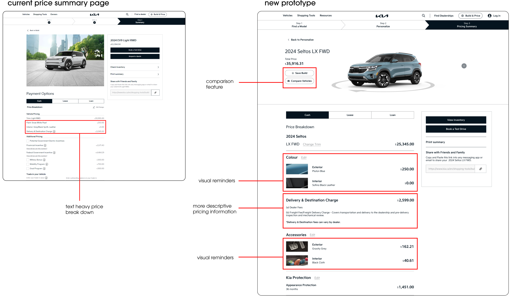
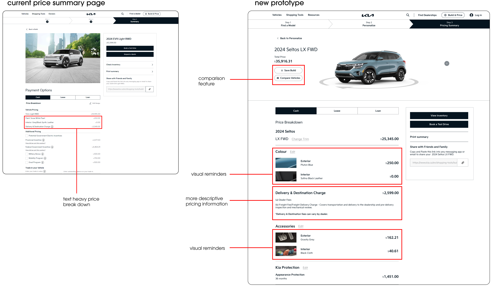

Team
Raymond Co
Christy Fang
Min KangAngela Lee
My Roles
UX Design
UI Design
Brand Strategy
Tools
Figma
Timeline
5 weeks, Spring 2024
Project Brief
In this academic project, teams were tasked with solving a problem for a client through experience design. Our team chose KIA.
The Client
Who Kia?
Kia is a South Korean automotive manufacturer known for offering vehicles with abundant features and technology at competitive pricing, making them attractive options for budget-conscious consumers.

Key Insight
1st in vehicle dependency, last in customer satisfaction
Despite ranking highest among mass market brands in vehicle dependency, Kia ranked last in customer satisfaction at dealerships, indicating a significant opportunity for improvement through experience design.
Problem Statement
Problem Statement
Kia customers encounter uncertainty and transparency issues on vehicle pricing between the online research process and in-person dealership interactions, leading to lack of trust among customers.
Problem Framing
Problem Framing
How might we facilitate a seamless transition between the online and in-person purchasing experience to expedite and enable informed decisions for Kia buyers?
Experience Design Intervention
Experience Design Intervention
The design solution consists of two parts:
1) Pre-event graphic assets, including promotional posters placed around Geneva and merchandise available for purchase, aimed at building anticipation for the festival.
2) A post-festival microsite providing insight into artists’ creative processes and personal
interests, fostering deeper connections between
fans and artists, and sustaining engagement after the festival.
Key Screens of Final Prototype
Before getting into the details of the design process, here is a preview of the app's finished screens:

Discovery
Secondary Research
Insights
In order to better understand the factors leading Kia to low customer satisfaction despite ranking high in vehicle dependency, we conducted secondary research which led to these three insights:

Areas of Design Intervention
We saw a significant opportunity for improvement through experience design, in improving Kia's desktop website in order to improve pricing transparency to help customers make more informed decisions, as well as streamline the transition from researching online to going into the dealership to talk with a sales representative or book a test drive.
Ideate
Design Sprint
4 days of brainstorming, rapid prototyping, user testing, and reiterating
To begin, I team created a user personas to summarize our the goals, needs, and frustrations of our target audience.
Prototype
Day 1: Wireframe Sketches
The team sketched wireframes to identify key pages and features for more informed customer decision-making and online-to-in-person transitions. We anonymously voted on heatmap results for preferred features and layouts for the first prototype iteration.
Highlighted in red are my sketches:
Day 2: Mid-Fidelity Prototype
After the team decided on which ideas to move forward with, we created a user flow and rapidly prototyped a mid-fidelity mockup on Figma, to prepare for user testing the next day:


Test
Day 3: Usability Testing
Who
How
What
Why
Due to time constraints, I tested with one user, which consisted of a 30-minute usability testing followed by a post-test interview, leading to valuable insight for our next iteration.

User Testing Insights
3 main insights were gathered from user testing to inform our next prototype iteration:
1) People were confused as to buttons were calls to action.
2) Swipe interaction is more intuitive than tap.
3) Event filter feature went unused because it required extra learning.
Prototype
Final Design
Part 1: Helping customers make more informed decisions, from research to requesting a quote
This is the first of two user scenario videos that team created to better explain where our interventions lie in the customer journey, where my role was in script writing.
 



Part 2: Bridging the online to in-person experience